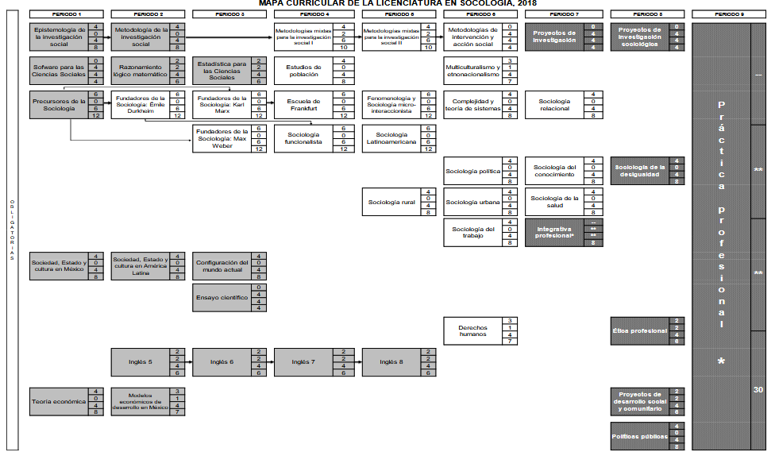

Licenciatura en Sociología
Formar profesionales capaces de investigar y solucionar problemáticas que afectan a la sociedad, contribuyendo al progreso social, económico y cultural.
Fenómenos de Estudio
Desigualdades
Violencias
Migraciones
Pobreza
Detalles del Programa
Duración y Valor
Periodos:
9 Periodos (4.5 años)
Total Créditos:
407 Créditos
(379 obligatorios y 28 optativos)
Modalidad Educativa
Mixta
Unidades de aprendizaje en modalidad escolarizada y no escolarizada.
Actualización:
2018
Espacios académicos donde se imparte
- Facultad de Ciencias Políticas y Sociales
- Centro Universitario UAEMéx Zumpango
Perfil de Egreso
Interpretación Crítica
Habilidad para leer e interpretar textos e imágenes, deduciendo mensajes implícitos y comunicando interpretaciones de forma oral y escrita.
Investigación de Campo
Capacidad para detectar problemas sociales y relacionarlos con datos obtenidos en campo, valorando el conocimiento científico.
Apreciación Artística
Interés profundo por el cine, el teatro y otras artes como herramientas de comprensión de la realidad social.
Trayectoria Académica
